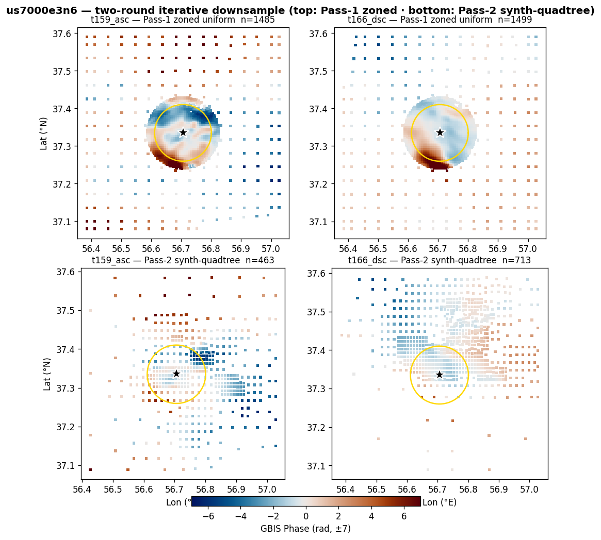

| track | Pass-1 zoned (pts) | Pass-2 synth-QT (pts) |
|---|---|---|
| t159_asc | 1485 | 463 |
| t166_dsc | 1499 | 713 |
Two-round iterative downsample (Luo+21). Pass-1: zoned uniform DS (near dense / far sparse) → short GBIS → initial model. Pass-2: GBIS-forward the initial model → smooth synthetic LOS field → variance quadtree on the synthetic field → mesh applied to real data. Sampling follows real deformation gradient, not noise — fewer but better-placed points than a noisy-data quadtree.
event_report.py us7000e3n6 --gbis-run <run> after completion to fill the prior/optimum table.event_report.py us7000e3n6 --gbis-run <run> after completion to fill the beachball.event_report.py us7000e3n6 --gbis-run <run> after completion to fill the data/model/residual triplet.event_report.py us7000e3n6 --gbis-run <run> after completion to fill the corner plot.event_report.py us7000e3n6 --gbis-run <run> after completion to fill the chain trace.